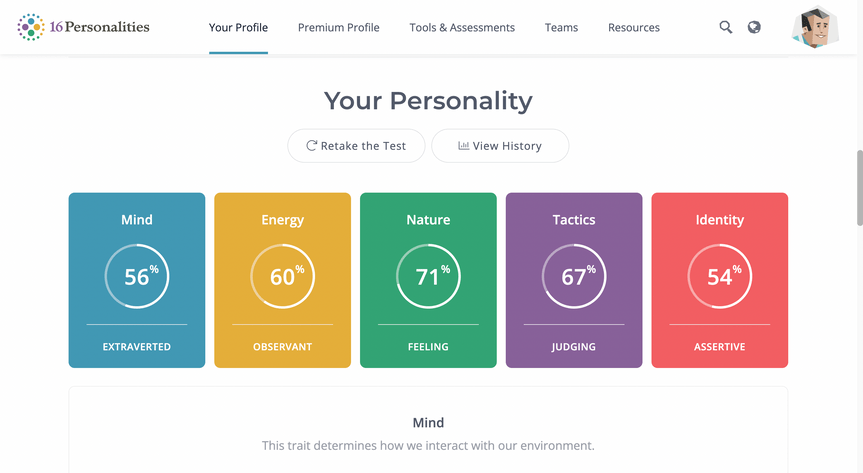
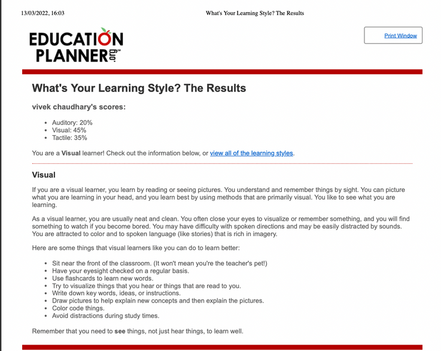

.png)
PROJECT IDEA
- FINGERPRINT AND IRIS SCAN BASED ATM SYSTEM: -
Fingerprint based ATM is a computer application in which user save their fingerprint and their iris for authentication. The user also chooses whether they want to use fingerprint or iris or both as a mode of authentication. As everyone knows that every person has unique fingerprint and iris so the users can be identified uniquely. Using Fingerprint or Iris scan-based ATM instead of ATM card is much safer and more secure. By using this system there is no need to carry ATM card and no worry of losing ATM card. Users can withdraw money from ATM machine by just using their fingerprint or iris scanning.
In Australia nearly two million ATM cards reported lost or stolen per year. One in eight persons in Australia lose their ATM card every year. By losing the ATM cards people become angry and upset. So here is my project idea to solve this problem. If people start using this application, they are not required to carry their ATM cards. Hence, amount of people who losing an ATM card will reduce, which will help everyone who faced these kinds of situations like losing or stolen of an ATM card. Many people find my project very useful mainly who lost their ATM card, or their ATM was stolen by somebody.
The aim of the project ‘Fingerprint and Iris scan-based ATM system’ is that everyone can access money without using actual ATM card. In this project I am using the fingerprint and iris scan biometrics. Users can store their biometrics (fingerprint and iris scan) in the database. User can set up their account and record either their fingerprint scan or iris scan or both. Users just have to use their fingerprint or iris scan to do any banking transection. Users have to set up a pin code which is asked by the software to enter before completing a transection, by adding the pin code this become more secure and more efficient to use and user now can trust this system because it has triple layer protection i.e. Fingerprint, iris scan and pin code. By using this software, users can withdraw funds from their bank account. Funds can be transfer from one account to another account by providing the appropriate account number. In order to withdraw money users must enter the amount. Transections can only be complete when there is money available in the account of the user. Also the account balance can be viewed by the users available in their respective account. This triple layer protection for any transection can help in maintaining the secure environment. If a user wants to add an additional fourth layer of getting an OTP in every transection than user can enable it. The main aim of our project is to provide more secure ATM system and provide fingerprint as the authorize identity of the user.
Advantages: -
- Fingerprint and iris scan-based ATM system is more secure than normal ATM card.
- Now there is no need to carry an ATM card as they can make transaction by using their fingerprint and iris scan anywhere and at anytime.
- High security and confirmation - Biometric distinguishing proof gives the responses to "something an individual has and will be" and checks identity.
- Client Experience - Convenient and quick.
- Biometrics are non-transferrable every user has unique fingerprint and iris scan.
- Parody resistant - Biometrics are difficult to fake or steal.
- • Fingerprints and iris scan are accurate.
Disadvantages: -
- • In any case the user having any cut or damaged fingerprint patter the system might not recognize the user.
- • Both fingerprint scan and iris scan are not working properly.
- • Biometrics database can be hacked.
- • Machine learning and calculations should be exceptionally cutting-edge to limit biometric segment inclination.
- • Physical disabilities like a burnt or damaged finger, a retina transplants, tattooed hands or if the user is wearing glasses (and usually doesn’t) or vice versa. In these type of situations, the confirmation strategy should be changed to give approved client access, which can be awkward.
- • To set up biometrics security a significant venture required.
- Data breaches: Organizations and legislatures that gather and store clients' very own information are under steady danger from programmers. Since biometric information is indispensable, associations need to treat delicate biometric information with expanded security and wariness - something costly and in fact troublesome to remain in front of extortion headways. In the event that a secret key or pin is compromised, there's generally the chance of evolving it. The equivalent can't be said for an individual's physiological or conduct biometrics.
- OS Windows 7 and above or macOS because these are stable and support more features .
- Database MySQL/No SQL is utilized as Database as it is not difficult to maintain and recover records by basic queries which are in English language which are not difficult to understand, easy to compose.
- development tools and programing language will be use are JavaScript , HTML.
Hardware required: -
- Intel Core i3 or higher processor.
- Minimum 512 MB of RAM and 1.5 GB of free space or higher is required.
- Fingerprint scanner and Iris scanner is required.
Skills Required: -
- • Programming languages required including JavaScript, HTML, Python and C++.
- • Web developing knowledge.
- Software need to be written is a application which allows every user to use their biometrics (fingerprint and iris scan) to do all the transections, to write this software JavaScript, HTML and PHP can be used these are most convenient for this software.
- Special hardware required are a fingerprint scanner and a iris scanner to record the biometrics and every user who want to record their biometrics have access to biometric scanners in their respective desktops.
- All these skills, software and special hardware are very easy to find. I’ll develop all the required skills during my course (i.e., Bachelors of IT).
Outcome: -
If this project become successful than it solves various daily life problems such as lost and stolen of an ATM card because there is no need to carry ATM card anywhere, every user can do transections in more convenient and safer way by using their biometrics (fingerprint and iris scan). Everyone wants secure environment to transfer money, It provides a triple layer security (fingerprint, iris scan and pin code) for user’s every transaction. Overall this project idea can provide a secure platform to do banking transactions using ATM details.